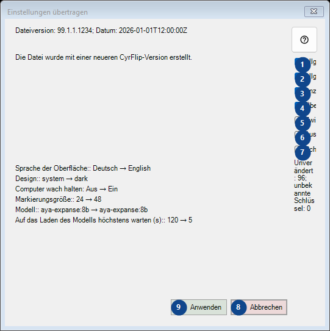
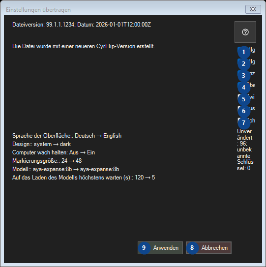

Einstellungen übertragen
Zweck
Lesen Sie die nummerierten Erklärungen, wählen Sie die benötigten Werte und fahren Sie mit dem Fensterbefehl fort.


Reihenfolge
Lesen Sie die nummerierten Erklärungen, wählen Sie die benötigten Werte und fahren Sie mit dem Fensterbefehl fort.
Elemente
1. Allgemein - Sprache und Design
Nutzen Sie diesen Befehl für die genannte Aktion. Lesen Sie eine Bestätigung, bevor Sie zustimmen.
Ihre Tastenkürzel2. Allgemein - Energie und Bildschirm
Nutzen Sie diesen Befehl für die genannte Aktion. Lesen Sie eine Bestätigung, bevor Sie zustimmen.
Ihre Tastenkürzel3. Anzeigen
Nutzen Sie diesen Befehl für die genannte Aktion. Lesen Sie eine Bestätigung, bevor Sie zustimmen.
Ihre Tastenkürzel4. Übersetzung - Ollama
Nutzen Sie diesen Befehl für die genannte Aktion. Lesen Sie eine Bestätigung, bevor Sie zustimmen.
Ihre Tastenkürzel5. Zwischenablage-Verlauf aktivieren
Nutzen Sie diesen Befehl für die genannte Aktion. Lesen Sie eine Bestätigung, bevor Sie zustimmen.
Ihre Tastenkürzel6. Auswahl an einen anderen Server senden
Nutzen Sie diesen Befehl für die genannte Aktion. Lesen Sie eine Bestätigung, bevor Sie zustimmen.
Ihre Tastenkürzel7. Schnellnotizen aktivieren
Nutzen Sie diesen Befehl für die genannte Aktion. Lesen Sie eine Bestätigung, bevor Sie zustimmen.
Ihre Tastenkürzel8. Abbrechen
Nutzen Sie diesen Befehl für die genannte Aktion. Lesen Sie eine Bestätigung, bevor Sie zustimmen.
Ihre Tastenkürzel9. Anwenden
Nutzen Sie diesen Befehl für die genannte Aktion. Lesen Sie eine Bestätigung, bevor Sie zustimmen.
Ihre Tastenkürzel